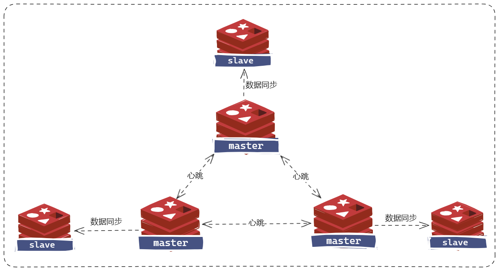

redis 分片集群
简介
- 主从和哨兵可以解决高可用、高并发读的问题。但是依然有两个问题没有解决：
- 海量数据存储问题、高并发写的问题。
- 使用分片集群可以解决上述问题，如图:

- 分片集群特征：
- 集群中有多个master，每个master保存不同数据。
- 每个master都可以有多个slave节点。
- master之间通过ping监测彼此健康状态。
- 客户端请求可以访问集群任意节点，最终都会被转发到正确节点。
散列插槽
插槽原理
- Redis会把每一个master节点映射到0~16383共16384个插槽（hash slot）上，查看集群信息时就能看到。
M: xxxxxxxxxxxxxxxxxxxxxxxx 172.30.1.2:7001
slots:[0-5460] (5461 slots) master
M: xxxxxxxxxxxxxxxxxxxxxxxx 172.30.1.2:7002
slots:[5461-10922] (5462 slots) master
M: xxxxxxxxxxxxxxxxxxxxxxxx 172.30.1.2:7003
slots:[10923-16383] (5461 slots) master
- 数据key不是与节点绑定，而是与插槽绑定。redis会根据key的有效部分计算插槽值，分两种情况：
- key中包含 "{}"，且 "{}" 中至少包含1个字符，"{}" 中的部分是有效部分。
- key中不包含 "{}"，整个key都是有效部分。
- 例如：key是num，那么就根据num计算，如果是{itcast}num，则根据itcast计算。计算方式是利用CRC16算法得到一个hash值，然后对16384取余，得到的结果就是slot值。
- 在7001这个节点执行set a 1时，对a做hash运算，对16384取余，得到的结果是15495，因此要存储到7003节点。
- 到了7003后，执行get num时，对num做hash运算，对16384取余，得到的结果是2765，因此需要切换到7001节点。
$ set a 1
-> Redirected to slot [15495] located at 172.30.1.2:7003
OK
$ get num
-> Redirected to slot [2765] located at 172.30.1.2:7001
- Redis如何判断某个key应该在哪个实例：
- 将16384个插槽分配到不同的实例。
- 根据key的有效部分计算哈希值，对16384取余。
- 余数作为插槽，寻找插槽所在实例即可。
- 如何将同一类数据固定的保存在同一个Redis实例：这一类数据使用相同的有效部分，例如key都以{typeId}为前缀。
集群伸缩
- redis-cli –cluster 提供了很多操作集群的命令，可以通过下面方式查看：
$ redis-cli --cluster help
添加新节点到集群
$ redis-cli --cluster add-node 192.168.150.101:7004 192.168.150.101:7001
- 查看集群状态。
$ redis-cli -p 7001 cluster nodes
转移插槽
- 转移插槽命令：redis-cli –cluster reshard host:port。
- host:port 从这个位置转移到其他位置。
故障转移
自动故障转移
- redis 集群会自动故障转移。
手动故障转移
- 利用cluster failover命令可以手动让集群中的某个master宕机，切换到执行cluster failover命令的这个slave节点，实现无感知的数据迁移。
- failover命令可以指定三种模式：
- “"：默认的流程，如图1~6歩。
- force：省略了对offset的一致性校验。
- takeover：直接执行第5歩，忽略数据一致性、忽略master状态和其它master的意见。

- 在从节点执行：
$ CLUSTER FAILOVER
搭建集群
- 分片集群需要的节点数量较多，这里我们搭建一个最小的分片集群，包含3个master节点，每个master包含一个slave节点。
| IP | PORT | 角色 |
|---|---|---|
| 172.30.2.11 | 7001 | master |
| 172.30.2.12 | 7002 | master |
| 172.30.2.13 | 7003 | master |
| 172.30.2.21 | 8001 | slave |
| 172.30.2.22 | 8002 | slave |
| 172.30.2.23 | 8003 | slave |

redis.conf
- redis.conf 文件准备。github 官网下载 redis 相应版本的配置文件。
- 对每个redis.conf都做以下修改。分片集群的redis主从的redis.conf目前都是一样的。
|
|
docker-compose.yml
|
|
$ docker-compose -p redis-sharding up -d
构建集群
下面的命令都在 master1 容器里执行。
自动分配主从关系
- 创建了一个集群，包括三个主节点和三个从节点，每个主节点分配一个从节点作为副本，前3个ip为主节点，后3个为从节点，主节点的从节点随机分配。
$ redis-cli --cluster create 172.30.2.11:6379 172.30.2.12:6379 172.30.2.13:6379 172.30.2.21:6379 172.30.2.22:6379 172.30.2.23:6379 --cluster-replicas 1
手动分配主从关系
- 分配 master 集群。
$ redis-cli --cluster create 172.30.2.11:6379 172.30.2.12:6379 172.30.2.13:6379 --cluster-replicas 0
- 查看3个主节点的ID。
$ redis-cli -h 172.30.2.11 -p 6379 cluster nodes
- 将3个从节点加入集群中，其中172.30.2.11可以是三个主节点的任意一个。
$ redis-cli -h 172.30.2.21 -p 6379 cluster meet 172.30.2.11 6379
$ redis-cli -h 172.30.2.22 -p 6379 cluster meet 172.30.2.11 6379
$ redis-cli -h 172.30.2.23 -p 6379 cluster meet 172.30.2.11 6379
- 为每个从节点指定主节点。
$ redis-cli -h 172.30.2.21 -p 6379 cluster replicate <master-ID>
$ redis-cli -h 172.30.2.22 -p 6379 cluster replicate <master-ID>
$ redis-cli -h 172.30.2.23 -p 6379 cluster replicate <master-ID>
验证
- 通过以下命令查看集群中每个节点的id、角色、ip、port、插槽范围等信息。
$ redis-cli -h 172.30.2.11 -p 6379 cluster nodes
- 往集群存入4个键值。
$ redis-cli -c -h 172.30.2.11 -p 6379 set key1 value1
$ redis-cli -c -h 172.30.2.11 -p 6379 set key2 value2
$ redis-cli -c -h 172.30.2.11 -p 6379 set key3 value3
$ redis-cli -c -h 172.30.2.11 -p 6379 set key4 value4
- 查看每个主节点现有的键值，会发现每个节点只有一部分键值。
$ redis-cli -h 172.30.2.11 -p 6379 --scan
$ redis-cli -h 172.30.2.12 -p 6379 --scan
$ redis-cli -h 172.30.2.13 -p 6379 --scan